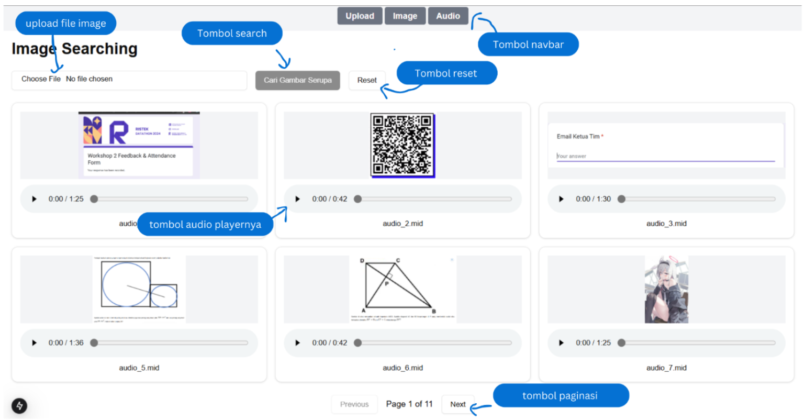
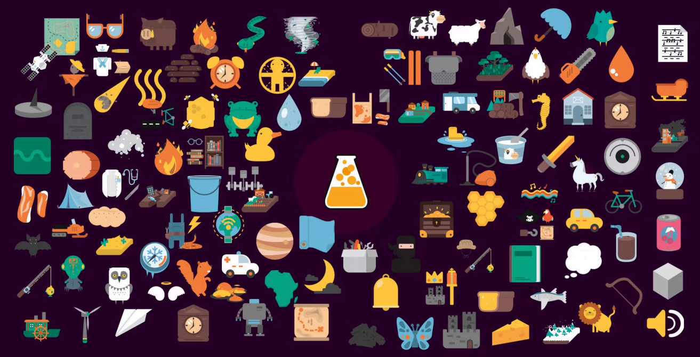
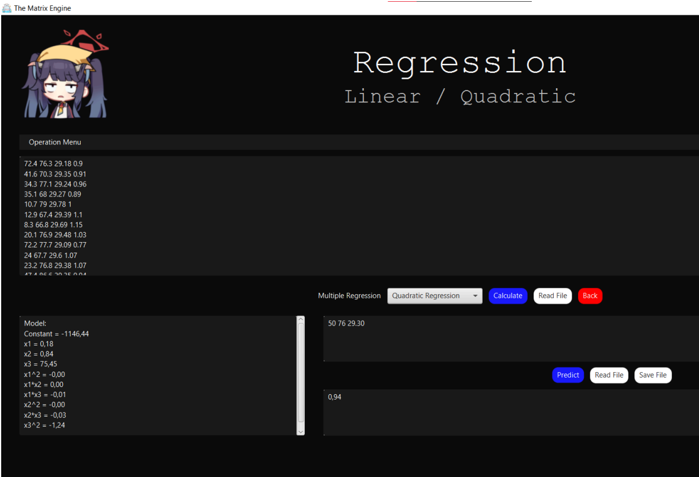
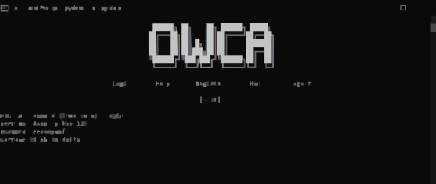
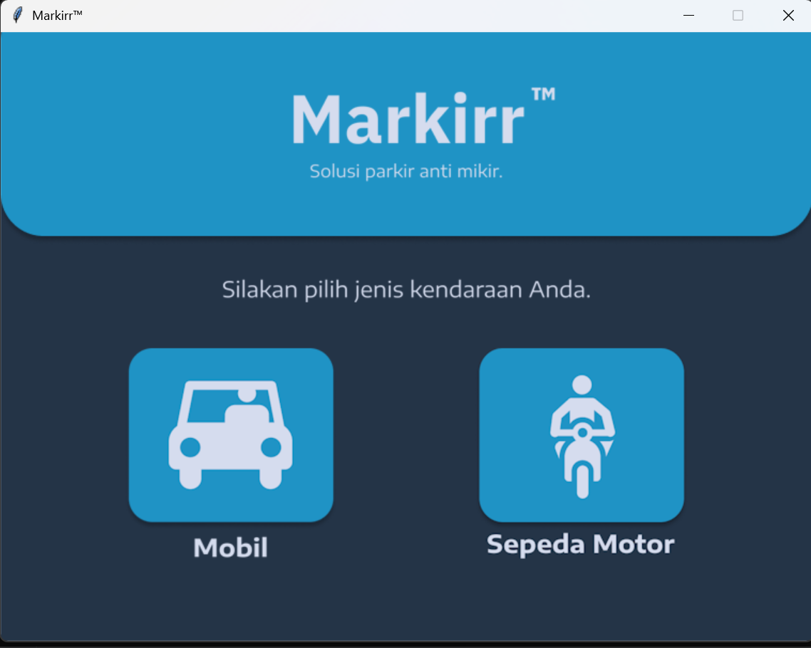
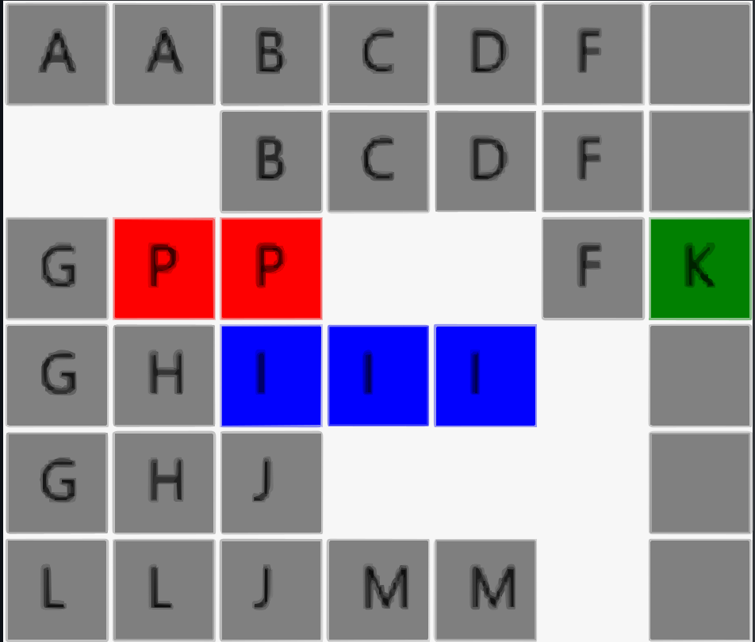
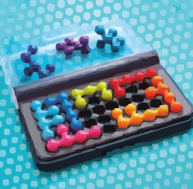
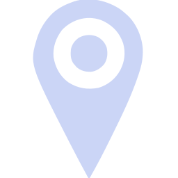

List Of Project

Multimedia Retrieval System
This project aims to search for images or audio based on their direct image and audio input.

Implementation of BFS and DFS in the game Little Alchemy
A web application that implements BFS and DFS algorithms to find crafting paths in Little Alchemy 2. Built with React frontend and Go backend.

”CamelUp” Camel Board Game
used Prolog to create a board game called Camel. The purpose of this project is to teach logic and reccurence using logical programming statements.
"PurryMail” Simple Mailing System
PurryMail is a new program to address the security issues with ZMail. It uses a modified ADT for features like message encryption and email management.

Matrix Calculator for Linear Algebra
created a Java-based matrix calculator application that lets users manipulate matrices in a number of ways. Regression analysis, matrix calculations, and linear equation solutions are all included in the program.

Multiclass Classification of Traffic Attack
carried out a thorough examination of website traffic statistics to find patterns and irregularities. In order to identify any security issues and reduce the likelihood of exploitation and cyberattacks, suspicious IP addresses and odd access patterns were looked into. This research was used at the University of Airlangga's 2024 Airnology Data Science Competition.

”O.W.C.A”, Turn-based RPG Game
created a turn-based role-playing game that allows players to take on multiple characters. Python is used in the game's development.

"Markirr" Parking Management System Software
Markirr is a simple parking management system software created for my first big project. Python is used in the software development.

Image Compression (Divide And Conquer)
This project focuses on image compression using the Quadtree method, a divide-and-conquer approach that recursively divides an image into smaller blocks based on color similarity.

Rush Hour Solver
Rush Hour Solver is a JavaFX-based application designed to solve the Rush Hour puzzle game using various search algorithms. The program allows users to input game board configurations via text files or design the board directly through an intuitive graphical interface.

IQ Puzzle Pro Solver
A program to find all word solutions in IQ Puzzle Pro using a brute-force algorithm and a Matrix ADT. The program accepts input in the form of a text file in .txt format containing the configuration: the row and column lengths of the board, the number of blocks to be used, and the block shapes according to the given number of blocks. The program then outputs the search results in a command prompt, with the found words colored. The program is built using the Java language.
Experience
Computational Thinking Assistant
Comlabs-USDI ITB
Served as a course assistant for computational thinking, facilitating academic delivery.
Staff Of Design in SPARTA 2025
Himpunan Mahasiswa Informatika (HMIF) ITB
Created visual concepts, handled layout designs, and collaborated on creative guidelines for SPARTA 2025.
Web Developer
The Sandbox by IEEE ITB
Developed and maintained interactive web applications tailored to IEEE ITB community needs.
Officer of Web Development
IEEE ITB Student Branch
Responsible for managing the student branch profile website and leading technical operations within the division.
Associate of Design Division
Society of Renewable Energy ITB
Drafted graphic designs, handled merchandising elements, and supported multimedia campaigns.
Staff of Design Division
The Sandbox by IEEE ITB
Produced promotional content to boost engagement with technological programs.
Skills Summary
Full-Stack Expertise
Built 5+ complete web applications from frontend to backend with modern technology stacks
Scalable Architecture
Designed and implemented cloud infrastructure serving hundreds of users with high availability.
Project Management
Discuss with my teammate to manage timeline and role for the project together.
UI/UX Design
Designing user interfaces with a strong focus on typography, color, and layout
Technical Skills
Programming Languages
Frontend & Mobile Development
Backend Development
Data Scientist
Contact
farhanjunaedi213@gmail.com

Location
Bandung, Indonesia
Github
Farhanabd05
Abdullah Farhan